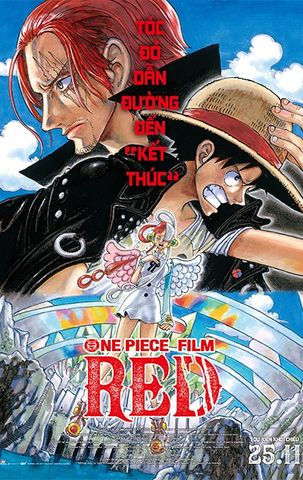

Trang chủ >
One Piece

One Piece
Uta - ca sĩ được yêu thích nhất trên thế giới. Giọng hát của cô ấy, mà cô ấy hát trong khi che giấu danh tính thực sự của mình, đã được mô tả là "thế giới khác." Cô ấy sẽ xuất hiện trước công chúng lần đầu tiên tại một buổi hòa nhạc trực tiếp. Khi địa điểm tập trung đông đảo những người hâm mộ Uta - những tên cướp biển hào hứng, Hải quân đang theo dõi sát sao, và băng Mũ Rơm do Luffy dẫn đầu chỉ đơn giản là đến để thưởng thức màn trình diễn tuyệt vời của cô - giọng nói mà cả thế giới chờ đợi sắp vang lên. Câu chuyện bắt đầu với sự thật gây sốc rằng cô ấy là "con gái của Shanks".
| Đạo Diễn: | Gorô Taniguchi |
|---|---|
| Diễn Viên: | Chô, Hiroaki Hirata, Shûichi Ikeda |
| Thể Loại: | Hoạt hình, Hành động |
| Thời Lượng: | 115 Phút |
| Ngôn Ngữ: | Tiếng Nhật |
| Ngày Khởi Chiếu: | 25/11/2022 |